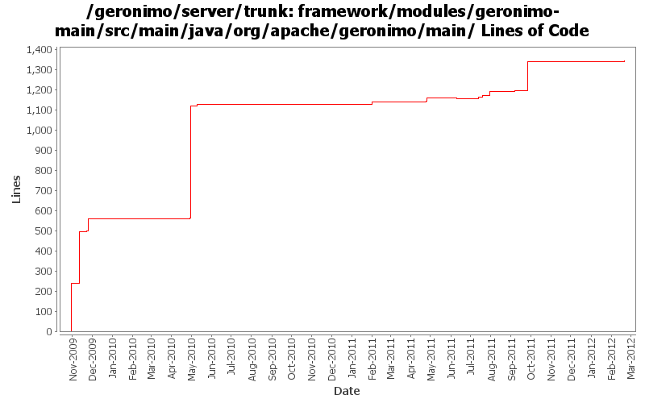

[root]/framework/modules/geronimo-main/src/main/java/org/apache/geronimo/main

| Author | Changes | Lines of Code | Lines per Change |
|---|---|---|---|
| Totals | 37 (100.0%) | 1801 (100.0%) | 48.6 |
| gawor | 24 (64.9%) | 1469 (81.6%) | 61.2 |
| xuhaihong | 4 (10.8%) | 257 (14.3%) | 64.2 |
| rwonly | 4 (10.8%) | 50 (2.8%) | 12.5 |
| genspring | 1 (2.7%) | 16 (0.9%) | 16.0 |
| xiaming | 1 (2.7%) | 6 (0.3%) | 6.0 |
| djencks | 3 (8.1%) | 3 (0.2%) | 1.0 |
GERONIMO-6282 Test if the repository folder of the new instance exists to avoid NPE, for trunk
6 lines of code changed in 1 file:
Use the codes from OpenEJB ClassloaderUtils to clean up the jar cache
163 lines of code changed in 2 files:
GERONIMO-6151: Geronimo does not start with JRockit JVM
4 lines of code changed in 1 file:
GERONIMO-5827 Extract the native libraries in the var/native directory, with this, all the native libraries will be loaded from this path
93 lines of code changed in 1 file:
GERONIMO-5893 use a start level for the config we start so it starts after features. Start a few more bundles in startup properties so they are more sure to get started early enough
1 lines of code changed in 1 file:
check temporary directory for write permissions
15 lines of code changed in 1 file:
GERONIMO-5764 should not start the fragment bundle
8 lines of code changed in 1 file:
GERONIMO-6058 Replace StringBuffer usage with StringBuilder
1 lines of code changed in 1 file:
Do not need to manually set the framework beginning start level
12 lines of code changed in 1 file:
GERONIMO-5793 make config properties overridable
15 lines of code changed in 1 file:
GERONIMO-5793 OSGI Bundle "Stop" doesn't work according to Hot deployed "HelloWorld" osgi bundle sample
15 lines of code changed in 1 file:
GERONIMO-5527: Improved server -clean option handling
10 lines of code changed in 1 file:
GERONIMO-5702: Update for Karaf 2.1.2. Based on patch from Viola Lu
1 lines of code changed in 1 file:
GERONIMO-5333: Check exit code from main before deciding how to shutdown the framework
8 lines of code changed in 1 file:
GERONIMO-5287: Ensure the instance cache directory is removed after the framework is fully stopped.
43 lines of code changed in 2 files:
GERONIMO-5287: Delete as many as files as we can. Based on patch from Ivan
3 lines of code changed in 1 file:
cleanup framework startup code
769 lines of code changed in 5 files:
GERONIMO-5213: More improvments for Geronimo Karaf shell commands. Refactored RemoteDeploymentManager so that the same set of operations can be invoked remote or locally.
2 lines of code changed in 1 file:
GERONIMO-5213: Implement start-server shell command to fork the server process. Might need to rethink that later on
4 lines of code changed in 1 file:
cf OPENEJB-1252 replace file.toURL() with file.toURI().toURL()
1 lines of code changed in 1 file:
register shutdown hook to remove the instance cache directory
7 lines of code changed in 1 file:
add some toString methods and some logging to help figure out what happens during deployment
1 lines of code changed in 1 file:
1) register geronimo-managed mbean server as osgi service, 2) enable osgi jmx bundle to expose rfc139 mbeans, 3) add/update the shutdown command to use rfc139 mbean to stop the container, 4) update the debug properties for jdb to use geronimo defaults
82 lines of code changed in 1 file:
get basic deploy command line tool working. some operations like list-modules or list-targets seem to work
18 lines of code changed in 1 file:
Rename the confusing main to karaf_main and geronimo_main to make this class more readable.
16 lines of code changed in 1 file:
missed some files
213 lines of code changed in 2 files:
some more logging updates: 1) use geronimo log4j.properties files to configure logging, 2) expose service to configure logging programtically, 3) remove unused geronimo-logging module
51 lines of code changed in 1 file:
add bin/geronimo and bin/client that work just like before. bin/karaf will only start the karaf framework
239 lines of code changed in 3 files: